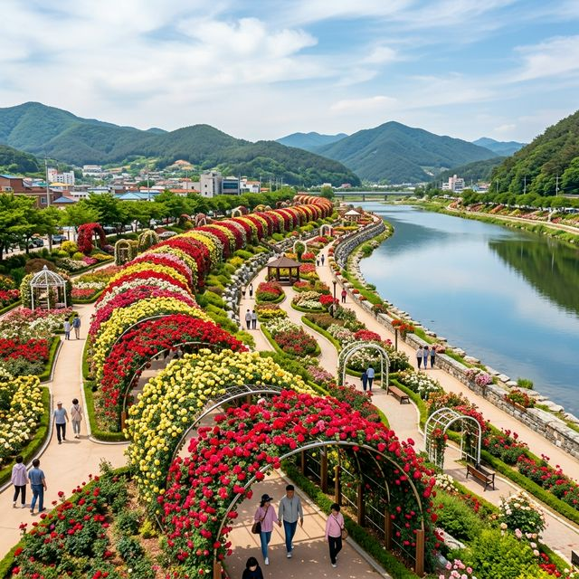
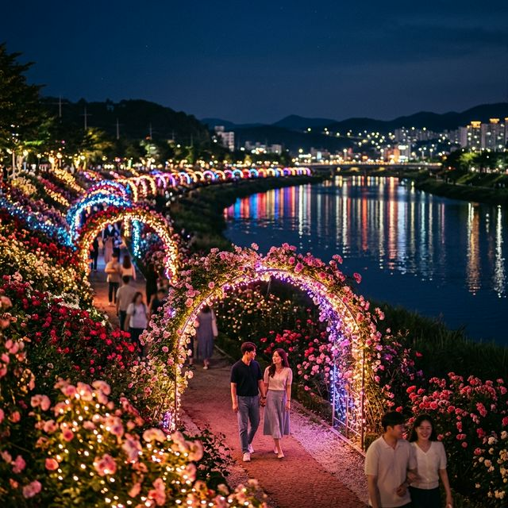
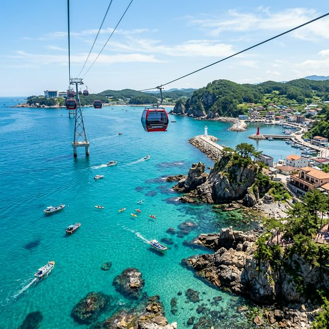

올해 삼척 장미축제는 2026년 5월 19일(화)부터 5월 25일(월)까지 일주일간 개최됩니다. 축제의 무대인 삼척 장미공원은 오십천 하류에 위치하여, 강물과 꽃이
어우러지는 수려한 경관을 자랑합니다. 총 222종, 약 1,000만 송이의 장미가 만개하는 시기에 맞춰 축제 기간을 설정하였기에, 언제 방문하시더라도 가장 절정의 아름다움을 만나보실 수
있습니다.
강원특별자치도 삼척시 정상동 232번지에 위치한 이곳은 삼척 시내와 가깝고 바다와도 인접해 있어 여행 동선을 짜기에 매우 훌륭합니다. 올해 축제는 '마주 보는 사랑, 장미의
진심'이라는 테마로 각 구역마다 서로 다른 감성 포인트를 운영할 계획입니다.
| 축제 공식 명칙 | 2026 삼척 장미축제 |
|---|---|
| 기간 | 2026. 05. 19 ~ 05. 25 (7일간) |
| 관람 시간 | 오전 09:00 ~ 오후 22:00 (야간 조명 운영) |
| 입장료 | 무료 (Free Admission) |
삼척 장미공원은 약 84,000㎡의 부지에 전 세계 다양한 품종의 장미들이 식재되어 있습니다. 기네스북 등재를 추진할 정도로 그 면적과 개릿수가 압도적이죠. 한 종류의 장미가 아닌, 색깔별, 크기별로
정교하게 설계된 미로 정원과 터널들은 걷는 내내 지루할 틈을 주지 않습니다.
특히 올해는 '로열 파크' 구역을 강화하여, 마치 유럽의 궁전 정원을 걷는 듯한 클래식한 분위기를 연출했습니다. 하얀색 장미와 대리석 조각상이 어우러진 이 구역은 이번
축제 최고의 인생샷 명소로 꼽히고 있으니, 방문 시 꼭 화사한 복장을 챙겨가 보시는 것을 추천드립니다.

오십천변에 펼쳐진 삼척 장미공원 전경 / AI 제작 이미지
아이와 함께 방문하는 가족 단위 관람객들에게 가장 희소식은 '장미 캐릭터 퍼레이드'의 확대입니다. 올해는 유명 유튜브 크리에이터 캐릭터들과 삼척의 마스코트가 어우러진
대규모 행렬이 매일 오후 2시와 4시에 정원을 순회합니다. 단순히 보는 것에서 그치지 않고, 퍼레이드 중간중간 아이들과 댄스를 즐기거나 함께 사진을 찍는 '인터랙티브 타임'이 지정되어
있습니다.
또한, 장미 파인 다이닝 구역에서는 장미 꽃잎을 활용한 다양한 디저트와 샐러드를 맛볼 수 있는 팝업 레스토랑이 운영됩니다. 전문가의 손길을 거친 식용 장미 요리들은 눈과
입을 동시에 즐겁게 해줄 특별한 경험이 될 것입니다.
삼척 장미축제의 진정한 매력은 해가 진 뒤에 나타납니다. 오후 7시부터 장미공원 전체에 화려한 LED 조명이 켜지며 낮과는 전혀 다른 분위기의 공간으로 탈바꿈합니다. 밤의
공기를 타고 더욱 진해지는 장미 향기를 맡으며 은은한 조명 아래 정원을 걷다 보면 장미의 숲에 들어와 있는 듯한 착각에 빠지게 되죠.
오십천 물줄기에 반사되는 야간 조명쇼와 매 정시마다 펼쳐지는 미디어 파사드 공연은 절대 놓쳐서는 안 될 구경거리입니다. 축제 기간 동안 야간 운영 시간을 오후 10시까지
연장하므로, 낮의 더위를 피해 해 질 녘 방문하여 밤의 낭만을 즐기시는 것도 좋은 전략입니다.

밤하늘을 수놓는 장미공원의 화려한 야경 / AI 제작 이미지
축제의 즐거움 중 하나는 참여하는 재미죠. 축제 기간 내내 메인 입구 근처에서는 '매일 선착순 100명 장미꽃 증정' 이벤트가 열립니다. 조금 서둘러 방문한다면 생기
넘치는 생화 한 송이를 들고 기분 좋게 관람을 시작할 수 있습니다. 또한, 장미 향수를 직접 조제해보는 원데이 클래스나 꽃차 시음회 등 오감을 만족시키는 부스들이 줄지어 방문객을
맞이합니다.
특히 올해 인기가 높은 곳은 '나만의 장미 화분 만들기' 부스입니다. 전문가로부터 장미 키우는 법에 대한 상세한 설명을 듣고, 자신이 직접 고른 장미 묘목을 화분에 담아
집으로 가져갈 수 있어 원예 애호가들에게 큰 호응을 얻고 있습니다.
삼척 장미공원은 주차 공간이 잘 마련되어 있는 편이지만, 축제 성수기 주말에는 주차 경쟁이 치열할 수밖에 없습니다. 장미공원 주차장 외에 인근 삼척종합운동장 임시 주차장을
이용하시는 것이 정신 건강에 이롭습니다. 이곳에서 축제장까지는 도보로 이동 가능하며, 수시로 셔틀버스가 운행되어 편리함을 더했습니다.
정원 내에는 휠체어와 유모차 대여소가 운영되고 있으며, 배리어 프리(Barrier-free) 코스가 잘 갖춰져 있어 거동이 불편하신 분들도 무리 없이 관람할 수 있습니다.
수유실과 화장실 등 필수 편의 시설은 정원 곳곳에 배치되어 동선을 최소화했습니다.
장미 구경을 마쳤다면 삼척의 다른 매력도 느껴보세요. 장미공원에서 차로 약 10분 거리에 있는 삼척 해상케이블카는 투명한 바다 위를 가로지르며 삼척항의 절경을 한눈에 담을
수 있게 해줍니다. 장호항에서 가잠항까지 이어지는 이 길은 '한국의 나폴리'라 불릴 만큼 이국적인 바다 색깔을 자랑합니다.
또한, 해안선을 따라 달리는 삼척 해양레일바이크는 시원한 바닷바람을 맞으며 운동과 관광을 동시에 즐길 수 있는 최고의 액티비티입니다. 미리 예약하지 않으면 이용이 어려울
정도로 인기가 높으니 축제 방문 전 통합 예약 사이트를 꼭 확인하시기 바랍니다.

푸른 바다 위를 가로지르는 삼척 해상케이블카 / AI 제작 이미지
삼척 여행에서 빠질 수 없는 먹거리는 바로 곰치국입니다. 묵은지와 함께 푹 끓여낸 곰치국은 시원하고 담백한 맛이 일품으로, 여행의 피로를 풀어주는 데 최고입니다. 또한,
삼척항 근처의 횟집들에서는 당일 갓 잡아 올린 신선한 활어회를 합리적인 가격에 맛볼 수 있습니다.
이색적인 음식을 원하신다면 삼척 전통시장(중앙시장)의 노브랜드 청년몰을 방문해 보세요. 장미 축제 기간을 겨냥한 다양한 퓨전 요리들과 삼척 특산물을 활용한 수제 맥주 등이
마련되어 있어 여행객들에게 소소한 즐거움을 더해줍니다.
삼척 장미공원은 그늘이 다소 부족할 수 있으므로 양산이나 선글라스는 필수 준비물입니다. 강변을 따라 걷는 코스가 길기 때문에 편안한 도보용 신발을 신으시는 것이 좋습니다.
또한 바다와 강이 만나는 지점이라 바람이 갑자기 차가워질 수 있으니 얇은 바람막이나 가디건 하나쯤은 챙겨가시는 것이 안전합니다.
정원 내에서의 취사 행위는 엄격히 금지되어 있으며, 발생한 쓰레기는 반드시 지정된 장소에 버리거나 되가져가는 수준 높은 시민 의식을 보여주시길 부탁드립니다. 아름다운 꽃들과 동해의 낭만을 오랫동안
보존하기 위해 우리 모두의 노력이 필요합니다.